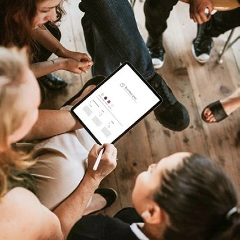

Stratégie et management
Conseil en QVT
Face aux enjeux de performance et aux attentes des équipes, la qualité de vie au travail (QVT) est plus que jamais essentielle. Votre expertise sera précieuse en...
